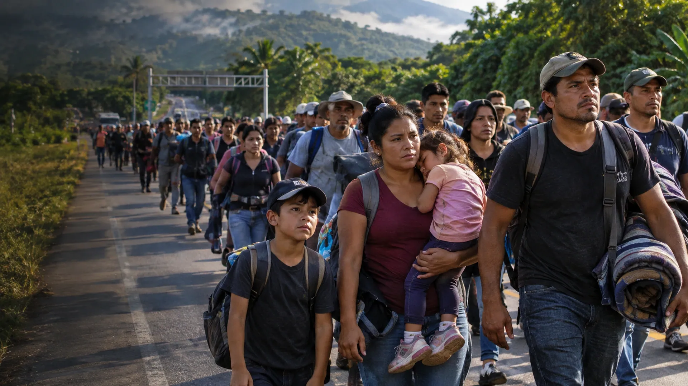

NEW MIGRANT CARAVAN MOVES NORTH AFTER MIDTERM ELECTIONS

A new group of migrants has reportedly crossed from Guatemala into southern Mexico, renewing attention on the long route toward the United States and on whether the 2026 midterm elections have changed expectations among people making that journey.
American Greatness, citing a Breitbart Texas report and Mexican media accounts, says roughly 300 to 500 people crossed the Rodolfo Robles International Bridge into Ciudad Hidalgo on Friday, November 6. The reported group then headed toward the Suchiate area of Chiapas. Those numbers are estimates in published accounts, not an independently verified head count by Texas News Studio.
The development follows a separate caravan that departed San Pedro Sula, Honduras, on November 3. Latin Times reported that dozens set out on Election Day, citing economic insecurity, extortion and hopes that changes in Congress might eventually affect U.S. immigration policy. The reports describe different movements; it is not established that every group has joined into one caravan.
Why the election is part of the story
Some participants interviewed by news organizations said they viewed Democratic victories in the midterms as a possible opening. But a political result does not itself change the rules at the border. CNN reported that the U.S. Embassy in El Salvador specifically reminded prospective travelers that American immigration law remains in force despite the election outcome.
That distinction matters. Expectations about future policy can motivate a journey without any actual change in admission standards, asylum procedures or enforcement practices. The Trump administration continues to oversee federal immigration enforcement, and there is no confirmed announcement that this caravan will receive special entry treatment.
What happens between southern Mexico and Texas?
Ciudad Hidalgo lies at Mexico's southern frontier, far from the U.S. border. Traveling north means crossing a vast distance, with potential delays, security risks and interventions by Mexican authorities. The reported departure of a group does not establish when—or whether—it will reach Texas.
Caravan size can also shift substantially along the way. Travelers may join, separate, seek other transportation or abandon the journey. That is why early estimates should not be treated as a reliable prediction of future arrivals at a particular U.S. border crossing.
What remains unconfirmed
As of this report, Texas News Studio has not independently verified the precise number of people in the November 6 group, their current location, or a specific destination in Texas. Nor is there evidence that the midterm results caused every participant to leave home. Published interviews point to a mix of economic pressures, family reunification, safety concerns and political expectations.
The next developments to watch are verified updates from Mexican immigration authorities, reporting from communities along the route and statements from U.S. border agencies. Those will be more useful than assumptions about the caravan's eventual size or arrival date.